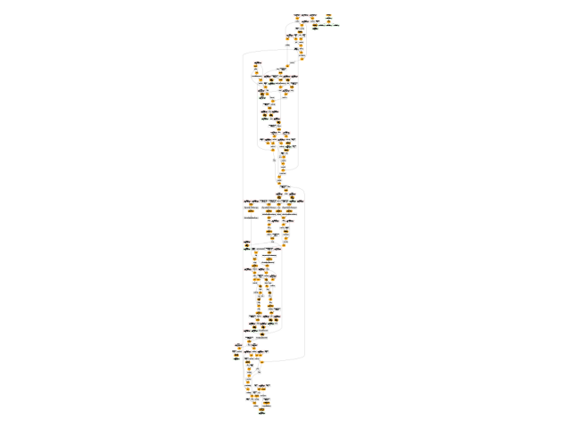

Note
Go to the end to download the full example code
101: Graph Optimization#
This example shows how to optimize a graph using pattern optimization. The graph was obtained by running a dummy llama model. It is the backward graph.
A model#
import os
import onnx
import pandas
from onnx_array_api.plotting.text_plot import onnx_simple_text_plot
from onnx_array_api.plotting.graphviz_helper import plot_dot
from experimental_experiment.xbuilder.graph_builder import (
GraphBuilder,
OptimizationOptions,
)
filename = (
os.path.join(os.path.dirname(__file__), "data", "dort-c-custom__1.onnx")
if "__file__" in globals()
else "data/dort-c-custom__1.onnx"
)
proto = onnx.load(filename)
print(f"number of nodes: {len(proto.graph.node)}")
print(onnx_simple_text_plot(proto))
number of nodes: 215
opset: domain='' version=18
input: name='input0' type=dtype('float32') shape=[1024]
input: name='input1' type=dtype('float32') shape=[1024]
input: name='input2' type=dtype('float32') shape=[1024]
input: name='input3' type=dtype('int64') shape=[2, 1024]
input: name='input4' type=dtype('float32') shape=[2, 1024, 1024]
input: name='input5' type=dtype('float32') shape=[2, 1024, 1]
input: name='input6' type=dtype('float32') shape=[2, 1024, 1024]
input: name='input7' type=dtype('float32') shape=[1024, 1024]
input: name='input8' type=dtype('float32') shape=[2048, 1024]
input: name='input9' type=dtype('float32') shape=[1024, 1024]
input: name='input10' type=dtype('float32') shape=[2048, 1024]
input: name='input11' type=dtype('float32') shape=[1024, 1024]
input: name='input12' type=dtype('float32') shape=[2048, 1024]
input: name='input13' type=dtype('float32') shape=[1024, 512]
input: name='input14' type=dtype('float32') shape=[1024, 512]
input: name='input15' type=dtype('float32') shape=[4, 1024, 512]
input: name='input16' type=dtype('float32') shape=[4, 512, 1024]
input: name='input17' type=dtype('float32') shape=[2, 2, 1024, 1024]
input: name='input18' type=dtype('float32') shape=[4, 1024, 1024]
input: name='input19' type=dtype('float32') shape=[4, 1024, 512]
input: name='input20' type=dtype('float32') shape=[1024, 1024]
input: name='input21' type=dtype('float32') shape=[2048, 1024]
input: name='input22' type=dtype('float32') shape=[2, 1024, 1024]
input: name='input23' type=dtype('float32') shape=[2, 1024, 1]
input: name='input24' type=dtype('float32') shape=[2, 1024, 1024]
input: name='input25' type=dtype('float32') shape=[1024, 1024]
input: name='input26' type=dtype('float32') shape=[2048, 1024]
input: name='input27' type=dtype('float32') shape=[2, 1024, 1024]
input: name='input28' type=dtype('float32') shape=[2, 1024, 1024]
input: name='input29' type=dtype('float32') shape=[1024, 1024]
input: name='input30' type=dtype('float32') shape=[2048, 1024]
input: name='input31' type=dtype('float32') shape=[2, 1024, 1024]
input: name='input32' type=dtype('float32') shape=[1024, 1024]
input: name='input33' type=dtype('float32') shape=[2048, 1024]
input: name='input34' type=dtype('float32') shape=[2, 1024, 1024]
input: name='input35' type=dtype('float32') shape=[2, 1024, 1]
input: name='input36' type=dtype('float32') shape=[2, 1024, 1024]
input: name='input37' type=dtype('float32') shape=[2, 1024, 1024]
input: name='input38' type=dtype('float32') shape=[2, 2, 1024, 512]
input: name='input39' type=dtype('float32') shape=[2, 2, 1024, 512]
init: name='init1_s1_' type=dtype('float32') shape=(1,) -- array([3.], dtype=float32)
init: name='init1_s1_2' type=dtype('float32') shape=(1,) -- array([3.], dtype=float32)
init: name='init1_s1_3' type=dtype('float32') shape=(1,) -- array([3.], dtype=float32)
init: name='init1_s1_4' type=dtype('float32') shape=(1,) -- array([0.], dtype=float32)
init: name='init1_s_' type=dtype('float32') shape=() -- array([-0.5], dtype=float32)
init: name='init1_s_10' type=dtype('float32') shape=() -- array([1024.], dtype=float32)
init: name='init1_s_11' type=dtype('float32') shape=() -- array([2.], dtype=float32)
init: name='init1_s_2' type=dtype('float32') shape=() -- array([1024.], dtype=float32)
init: name='init1_s_3' type=dtype('float32') shape=() -- array([2.], dtype=float32)
init: name='init1_s_4' type=dtype('float32') shape=() -- array([1.], dtype=float32)
init: name='init1_s_5' type=dtype('float32') shape=() -- array([-0.5], dtype=float32)
init: name='init1_s_6' type=dtype('float32') shape=() -- array([1024.], dtype=float32)
init: name='init1_s_7' type=dtype('float32') shape=() -- array([2.], dtype=float32)
init: name='init1_s_8' type=dtype('float32') shape=() -- array([22.627417], dtype=float32)
init: name='init1_s_9' type=dtype('float32') shape=() -- array([-0.5], dtype=float32)
init: name='init7_s1_-1' type=dtype('int64') shape=(1,) -- array([-1])
init: name='init7_s1_-12' type=dtype('int64') shape=(1,) -- array([-1])
init: name='init7_s1_-13' type=dtype('int64') shape=(1,) -- array([-1])
init: name='init7_s1_0' type=dtype('int64') shape=(1,) -- array([0])
init: name='init7_s1_02' type=dtype('int64') shape=(1,) -- array([0])
init: name='init7_s1_1024' type=dtype('int64') shape=(1,) -- array([1024])
init: name='init7_s1_10242' type=dtype('int64') shape=(1,) -- array([1024])
init: name='init7_s1_10243' type=dtype('int64') shape=(1,) -- array([1024])
init: name='init7_s1_2' type=dtype('int64') shape=(1,) -- array([2])
init: name='init7_s1_22' type=dtype('int64') shape=(1,) -- array([2])
init: name='init7_s1_23' type=dtype('int64') shape=(1,) -- array([2])
init: name='init7_s1_256' type=dtype('int64') shape=(1,) -- array([256])
init: name='init7_s1_2562' type=dtype('int64') shape=(1,) -- array([256])
init: name='init7_s1_2563' type=dtype('int64') shape=(1,) -- array([256])
init: name='init7_s1_2564' type=dtype('int64') shape=(1,) -- array([256])
init: name='init7_s1_3' type=dtype('int64') shape=(1,) -- array([3])
init: name='init7_s1_32' type=dtype('int64') shape=(1,) -- array([3])
init: name='init7_s1_33' type=dtype('int64') shape=(1,) -- array([3])
init: name='init7_s1_34' type=dtype('int64') shape=(1,) -- array([3])
init: name='init7_s1_512' type=dtype('int64') shape=(1,) -- array([512])
init: name='init7_s1_5122' type=dtype('int64') shape=(1,) -- array([512])
init: name='init7_s2_0_1' type=dtype('int64') shape=(2,) -- array([0, 1])
init: name='init7_s2_0_12' type=dtype('int64') shape=(2,) -- array([0, 1])
init: name='init7_s2_0_13' type=dtype('int64') shape=(2,) -- array([0, 1])
init: name='init7_s2_1024_10242' type=dtype('int64') shape=(2,) -- array([1024, 1024])
init: name='init7_s2_2048_1024' type=dtype('int64') shape=(2,) -- array([2048, 1024])
init: name='init7_s2_2048_10242' type=dtype('int64') shape=(2,) -- array([2048, 1024])
init: name='init7_s2_2048_10243' type=dtype('int64') shape=(2,) -- array([2048, 1024])
init: name='init7_s2_2048_10244' type=dtype('int64') shape=(2,) -- array([2048, 1024])
init: name='init7_s2_2048_10245' type=dtype('int64') shape=(2,) -- array([2048, 1024])
init: name='init7_s2_2048_10246' type=dtype('int64') shape=(2,) -- array([2048, 1024])
init: name='init7_s2_2048_10247' type=dtype('int64') shape=(2,) -- array([2048, 1024])
init: name='init7_s3_2_1024_1024' type=dtype('int64') shape=(3,) -- array([ 2, 1024, 1024])
init: name='init7_s3_2_1024_102410' type=dtype('int64') shape=(3,) -- array([ 2, 1024, 1024])
init: name='init7_s3_2_1024_102411' type=dtype('int64') shape=(3,) -- array([ 2, 1024, 1024])
init: name='init7_s3_2_1024_102412' type=dtype('int64') shape=(3,) -- array([ 2, 1024, 1024])
init: name='init7_s3_2_1024_102413' type=dtype('int64') shape=(3,) -- array([ 2, 1024, 1024])
init: name='init7_s3_2_1024_102414' type=dtype('int64') shape=(3,) -- array([ 2, 1024, 1024])
init: name='init7_s3_2_1024_102415' type=dtype('int64') shape=(3,) -- array([ 2, 1024, 1024])
init: name='init7_s3_2_1024_10242' type=dtype('int64') shape=(3,) -- array([ 2, 1024, 1024])
init: name='init7_s3_2_1024_10243' type=dtype('int64') shape=(3,) -- array([ 2, 1024, 1024])
init: name='init7_s3_2_1024_10245' type=dtype('int64') shape=(3,) -- array([ 2, 1024, 1024])
init: name='init7_s3_2_1024_10246' type=dtype('int64') shape=(3,) -- array([ 2, 1024, 1024])
init: name='init7_s3_2_1024_10247' type=dtype('int64') shape=(3,) -- array([ 2, 1024, 1024])
init: name='init7_s3_2_1024_10248' type=dtype('int64') shape=(3,) -- array([ 2, 1024, 1024])
init: name='init7_s3_2_1024_10249' type=dtype('int64') shape=(3,) -- array([ 2, 1024, 1024])
init: name='init7_s3_4_1024_1024' type=dtype('int64') shape=(3,) -- array([ 4, 1024, 1024])
init: name='init7_s3_4_1024_512' type=dtype('int64') shape=(3,) -- array([ 4, 1024, 512])
init: name='init7_s4_2_1024_2_512' type=dtype('int64') shape=(4,) -- array([ 2, 1024, 2, 512])
init: name='init7_s4_2_2_1024_1024' type=dtype('int64') shape=(4,) -- array([ 2, 2, 1024, 1024])
init: name='init7_s4_2_2_1024_256' type=dtype('int64') shape=(4,) -- array([ 2, 2, 1024, 256])
init: name='init7_s4_2_2_1024_2562' type=dtype('int64') shape=(4,) -- array([ 2, 2, 1024, 256])
init: name='init7_s4_2_2_1024_2563' type=dtype('int64') shape=(4,) -- array([ 2, 2, 1024, 256])
init: name='init7_s4_2_2_1024_2564' type=dtype('int64') shape=(4,) -- array([ 2, 2, 1024, 256])
init: name='init7_s4_2_2_1024_512' type=dtype('int64') shape=(4,) -- array([ 2, 2, 1024, 512])
init: name='init7_s4_2_2_1024_5122' type=dtype('int64') shape=(4,) -- array([ 2, 2, 1024, 512])
init: name='init7_s4_2_2_512_1024' type=dtype('int64') shape=(4,) -- array([ 2, 2, 512, 1024])
init: name='init7_s_-1' type=dtype('int64') shape=() -- array([-1])
Constant(value_float=0) -> output_11
Mul(input37, input2) -> _onx_mul0
Cast(_onx_mul0, to=1) -> mul_13
Mul(mul_13, input34) -> _onx_mul03
Cast(_onx_mul03, to=1) -> mul_15
ReduceSum(mul_15, init7_s1_2, keepdims=1) -> sum_2
Mul(sum_2, init1_s_) -> _onx_mul05
Cast(_onx_mul05, to=1) -> mul_17
Mul(input37, input36) -> _onx_mul02
Cast(_onx_mul02, to=1) -> mul_14
ReduceSum(mul_14, init7_s2_0_1, keepdims=1) -> sum_1
Reshape(sum_1, init7_s1_1024) -> output_2
Mul(mul_13, input35) -> _onx_mul04
Cast(_onx_mul04, to=1) -> mul_16
Pow(input35, init1_s1_) -> pow_4
Mul(mul_17, pow_4) -> _onx_mul06
Cast(_onx_mul06, to=1) -> mul_18
Expand(mul_18, init7_s3_2_1024_1024) -> expand_5
Div(expand_5, init1_s_2) -> _onx_div0
Cast(_onx_div0, to=1) -> div_1
Mul(input34, init1_s_3) -> _onx_mul07
Cast(_onx_mul07, to=1) -> mul_19
Mul(div_1, mul_19) -> _onx_mul08
Cast(_onx_mul08, to=1) -> mul_20
Add(mul_16, mul_20) -> add_8
Reshape(add_8, init7_s2_2048_1024) -> view_22
Transpose(view_22, perm=[1,0]) -> t_8
MatMul(t_8, input33) -> mm_8
Transpose(mm_8, perm=[1,0]) -> t_9
Transpose(t_9, perm=[1,0]) -> output_10
Transpose(input32, perm=[1,0]) -> t_10
MatMul(view_22, t_10) -> mm_9
Reshape(mm_9, init7_s3_2_1024_10242) -> view_23
Mul(view_23, input28) -> _onx_mul09
Cast(_onx_mul09, to=1) -> mul_21
Reshape(mul_21, init7_s2_2048_10242) -> view_24
Transpose(view_24, perm=[1,0]) -> t_12
MatMul(t_12, input30) -> mm_10
Transpose(mm_10, perm=[1,0]) -> t_13
Transpose(t_13, perm=[1,0]) -> output_9
Mul(view_23, input31) -> _onx_mul010
Cast(_onx_mul010, to=1) -> mul_22
Transpose(input29, perm=[1,0]) -> t_14
MatMul(view_24, t_14) -> mm_11
Reshape(mm_11, init7_s3_2_1024_10243) -> view_25
Sigmoid(input27) -> sigmoid
ConstantOfShape(init7_s3_2_1024_10245, value=[1.0]) -> fill
Sub(fill, sigmoid) -> sub
Mul(input27, sub) -> _onx_mul011
Cast(_onx_mul011, to=1) -> mul_23
Add(mul_23, init1_s_4) -> add_9
Mul(sigmoid, add_9) -> _onx_mul012
Cast(_onx_mul012, to=1) -> mul_24
Mul(mul_22, mul_24) -> _onx_mul013
Cast(_onx_mul013, to=1) -> mul_25
Reshape(mul_25, init7_s2_2048_10243) -> view_26
Transpose(view_26, perm=[1,0]) -> t_16
MatMul(t_16, input26) -> mm_12
Transpose(mm_12, perm=[1,0]) -> t_17
Transpose(t_17, perm=[1,0]) -> output_8
Transpose(input25, perm=[1,0]) -> t_18
MatMul(view_26, t_18) -> mm_13
Reshape(mm_13, init7_s3_2_1024_10246) -> view_27
Add(view_25, view_27) -> add_10
Mul(add_10, input1) -> _onx_mul014
Cast(_onx_mul014, to=1) -> mul_26
Mul(mul_26, input22) -> _onx_mul016
Cast(_onx_mul016, to=1) -> mul_28
ReduceSum(mul_28, init7_s1_22, keepdims=1) -> sum_4
Mul(sum_4, init1_s_5) -> _onx_mul018
Cast(_onx_mul018, to=1) -> mul_30
Mul(add_10, input24) -> _onx_mul015
Cast(_onx_mul015, to=1) -> mul_27
ReduceSum(mul_27, init7_s2_0_12, keepdims=1) -> sum_3
Reshape(sum_3, init7_s1_10242) -> output_1
Mul(mul_26, input23) -> _onx_mul017
Cast(_onx_mul017, to=1) -> mul_29
Add(add_8, mul_29) -> add_11
Pow(input23, init1_s1_2) -> pow_6
Mul(mul_30, pow_6) -> _onx_mul019
Cast(_onx_mul019, to=1) -> mul_31
Expand(mul_31, init7_s3_2_1024_10247) -> expand_6
Div(expand_6, init1_s_6) -> _onx_div02
Cast(_onx_div02, to=1) -> div_2
Mul(input22, init1_s_7) -> _onx_mul020
Cast(_onx_mul020, to=1) -> mul_32
Mul(div_2, mul_32) -> _onx_mul021
Cast(_onx_mul021, to=1) -> mul_33
Add(add_11, mul_33) -> add_12
Reshape(add_12, init7_s2_2048_10244) -> view_29
Transpose(view_29, perm=[1,0]) -> t_20
MatMul(t_20, input21) -> mm_14
Transpose(mm_14, perm=[1,0]) -> t_21
Transpose(t_21, perm=[1,0]) -> output_7
Transpose(input20, perm=[1,0]) -> t_22
MatMul(view_29, t_22) -> mm_15
Reshape(mm_15, init7_s3_2_1024_10248) -> view_30
Reshape(view_30, init7_s4_2_1024_2_512) -> view_31
Transpose(view_31, perm=[0,2,1,3]) -> transpose_5
Reshape(transpose_5, init7_s3_4_1024_512) -> _unsafe_view_3
Transpose(input18, perm=[0,2,1]) -> transpose_6
MatMul(transpose_6, _unsafe_view_3) -> bmm_2
Reshape(bmm_2, init7_s4_2_2_1024_512) -> view_32
Add(input39, view_32) -> add_13
Transpose(add_13, perm=[0,2,1,3]) -> transpose_11
Reshape(transpose_11, init7_s3_2_1024_10249) -> _unsafe_view_4
Reshape(_unsafe_view_4, init7_s2_2048_10245) -> view_37
Transpose(view_37, perm=[1,0]) -> t_24
MatMul(t_24, input12) -> mm_16
Transpose(mm_16, perm=[1,0]) -> t_25
Transpose(t_25, perm=[1,0]) -> output_6
Transpose(input19, perm=[0,2,1]) -> transpose_7
MatMul(_unsafe_view_3, transpose_7) -> bmm_3
Reshape(bmm_3, init7_s4_2_2_1024_1024) -> view_33
Cast(view_33, to=1) -> _onx_cast0
Mul(_onx_cast0, input17) -> _onx_mul022
ReduceSum(_onx_mul022, init7_s1_-1, keepdims=1) -> _onx_reducesum0
Mul(input17, _onx_reducesum0) -> _onx_mul023
Sub(_onx_mul022, _onx_mul023) -> _softmax_backward_data
Div(_softmax_backward_data, init1_s_8) -> div_3
Reshape(div_3, init7_s3_4_1024_1024) -> view_34
Transpose(input15, perm=[0,2,1]) -> transpose_8
MatMul(transpose_8, view_34) -> bmm_4
Reshape(bmm_4, init7_s4_2_2_512_1024) -> view_35
Transpose(view_35, perm=[0,1,3,2]) -> transpose_10
Add(input38, transpose_10) -> add_14
Mul(add_14, input14) -> _onx_mul024
Cast(_onx_mul024, to=1) -> mul_34
Slice(mul_34, init7_s1_0, init7_s1_256, init7_s1_3) -> slice_10
Neg(slice_10) -> neg_2
Transpose(input16, perm=[0,2,1]) -> transpose_9
MatMul(view_34, transpose_9) -> bmm_5
Reshape(bmm_5, init7_s4_2_2_1024_5122) -> view_36
Mul(view_36, input14) -> _onx_mul026
Cast(_onx_mul026, to=1) -> mul_36
Slice(mul_36, init7_s1_02, init7_s1_2563, init7_s1_33) -> slice_12
Neg(slice_12) -> neg_3
Slice(mul_34, init7_s1_2562, init7_s1_512, init7_s1_32) -> slice_11
ConstantOfShape(init7_s4_2_2_1024_256, value=[0.0]) -> _onx_constantofshape0
Concat(_onx_constantofshape0, neg_2, axis=3) -> _onx_concat0
ConstantOfShape(init7_s4_2_2_1024_2562, value=[0.0]) -> _onx_constantofshape02
Concat(slice_11, _onx_constantofshape02, axis=3) -> _onx_concat02
Add(_onx_concat0, _onx_concat02) -> add_15
Mul(add_14, input13) -> _onx_mul025
Cast(_onx_mul025, to=1) -> mul_35
Add(add_15, mul_35) -> add_16
Transpose(add_16, perm=[0,2,1,3]) -> transpose_12
Reshape(transpose_12, init7_s3_2_1024_102410) -> _unsafe_view_5
Reshape(_unsafe_view_5, init7_s2_2048_10246) -> view_39
Transpose(view_39, perm=[1,0]) -> t_28
MatMul(t_28, input10) -> mm_18
Transpose(mm_18, perm=[1,0]) -> t_29
Transpose(t_29, perm=[1,0]) -> output_5
Slice(mul_36, init7_s1_2564, init7_s1_5122, init7_s1_34) -> slice_13
ConstantOfShape(init7_s4_2_2_1024_2563, value=[0.0]) -> _onx_constantofshape03
Concat(_onx_constantofshape03, neg_3, axis=3) -> _onx_concat03
ConstantOfShape(init7_s4_2_2_1024_2564, value=[0.0]) -> _onx_constantofshape04
Concat(slice_13, _onx_constantofshape04, axis=3) -> _onx_concat04
Add(_onx_concat03, _onx_concat04) -> add_17
Mul(view_36, input13) -> _onx_mul027
Cast(_onx_mul027, to=1) -> mul_37
Add(add_17, mul_37) -> add_18
Transpose(add_18, perm=[0,2,1,3]) -> transpose_13
Reshape(transpose_13, init7_s3_2_1024_102411) -> _unsafe_view_6
Reshape(_unsafe_view_6, init7_s2_2048_10247) -> view_41
Transpose(view_41, perm=[1,0]) -> t_32
MatMul(t_32, input8) -> mm_20
Transpose(mm_20, perm=[1,0]) -> t_33
Transpose(t_33, perm=[1,0]) -> output_4
Transpose(input11, perm=[1,0]) -> t_26
MatMul(view_37, t_26) -> mm_17
Reshape(mm_17, init7_s3_2_1024_102412) -> view_38
Transpose(input9, perm=[1,0]) -> t_30
MatMul(view_39, t_30) -> mm_19
Reshape(mm_19, init7_s3_2_1024_102413) -> view_40
Add(view_38, view_40) -> add_19
Transpose(input7, perm=[1,0]) -> t_34
MatMul(view_41, t_34) -> mm_21
Reshape(mm_21, init7_s3_2_1024_102414) -> view_42
Add(add_19, view_42) -> add_20
Mul(add_20, input0) -> _onx_mul028
Cast(_onx_mul028, to=1) -> mul_38
Mul(mul_38, input4) -> _onx_mul030
Cast(_onx_mul030, to=1) -> mul_40
ReduceSum(mul_40, init7_s1_23, keepdims=1) -> sum_6
Mul(sum_6, init1_s_9) -> _onx_mul032
Cast(_onx_mul032, to=1) -> mul_42
Mul(add_20, input6) -> _onx_mul029
Cast(_onx_mul029, to=1) -> mul_39
ReduceSum(mul_39, init7_s2_0_13, keepdims=1) -> sum_5
Reshape(sum_5, init7_s1_10243) -> output_0
Mul(mul_38, input5) -> _onx_mul031
Cast(_onx_mul031, to=1) -> mul_41
Add(add_12, mul_41) -> add_21
Pow(input5, init1_s1_3) -> pow_8
Mul(mul_42, pow_8) -> _onx_mul033
Cast(_onx_mul033, to=1) -> mul_43
Expand(mul_43, init7_s3_2_1024_102415) -> expand_7
Div(expand_7, init1_s_10) -> _onx_div03
Cast(_onx_div03, to=1) -> div_4
Mul(input4, init1_s_11) -> _onx_mul034
Cast(_onx_mul034, to=1) -> mul_44
Mul(div_4, mul_44) -> _onx_mul035
Cast(_onx_mul035, to=1) -> mul_45
Add(add_21, mul_45) -> add_22
Equal(input3, init7_s_-1) -> eq_2
Unsqueeze(eq_2, init7_s1_-12) -> unsqueeze_6
Where(unsqueeze_6, init1_s1_4, add_22) -> _onx_where0
Unsqueeze(input3, init7_s1_-13) -> _onx_unsqueeze0
ConstantOfShape(init7_s2_1024_10242, value=[0.0]) -> _onx_constantofshape05
ScatterND(_onx_constantofshape05, _onx_unsqueeze0, _onx_where0, reduction=b'add') -> _onx_scatternd0
Identity(_onx_scatternd0) -> output_3
Constant(value_float=0) -> output_12
Constant(value_float=0) -> output_13
Constant(value_float=0) -> output_14
output: name='output_0' type=dtype('float32') shape=[1024]
output: name='output_1' type=dtype('float32') shape=[1024]
output: name='output_2' type=dtype('float32') shape=[1024]
output: name='output_3' type=dtype('float32') shape=[1024, 1024]
output: name='output_4' type=dtype('float32') shape=[1024, 1024]
output: name='output_5' type=dtype('float32') shape=[1024, 1024]
output: name='output_6' type=dtype('float32') shape=[1024, 1024]
output: name='output_7' type=dtype('float32') shape=[1024, 1024]
output: name='output_8' type=dtype('float32') shape=[1024, 1024]
output: name='output_9' type=dtype('float32') shape=[1024, 1024]
output: name='output_10' type=dtype('float32') shape=[1024, 1024]
output: name='output_11' type=dtype('float32') shape=None
output: name='output_12' type=dtype('float32') shape=None
output: name='output_13' type=dtype('float32') shape=None
output: name='output_14' type=dtype('float32') shape=None
And visually.
<Axes: >
Optimization#
gr = GraphBuilder(
proto,
infer_shapes=True,
optimization_options=OptimizationOptions(patterns="default"),
)
stats = gr.optimize()
df = pandas.DataFrame(stats)
df.to_csv("plot_optimize.csv")
df.to_excel("plot_optimize.xlsx")
df
Summary
print(df[["pattern", "added", "removed"]].groupby("pattern").sum())
added removed
pattern
CastPattern 37.0 37
ExpandBroadcastPattern 3.0 6
MatMulReshape2Of3Pattern 10.0 12
MulMulMulScalarPattern 6.0 9
ReduceReshapePattern 3.0 6
Reshape2Of3Pattern 5.0 6
ReshapeReshapePattern 4.0 8
RotaryConcatPartPattern 8.0 16
Sub1MulPattern 2.0 2
TransposeMatMulPattern 14.0 28
TransposeReshapeMatMulPattern 12.0 12
TransposeTransposePattern 7.0 14
remove_identity_nodes 0.0 45
remove_unused 0.0 1
The total is:
number of removed nodes: 91.0
Conversion to onnx.
optimized_proto = gr.to_onnx(optimize=False)
print(f"number of new nodes: {len(optimized_proto.graph.node)}")
number of new nodes: 124
It gives the following.
print(onnx_simple_text_plot(optimized_proto))
opset: domain='' version=18
input: name='input0' type=dtype('float32') shape=[1024]
input: name='input1' type=dtype('float32') shape=[1024]
input: name='input2' type=dtype('float32') shape=[1024]
input: name='input3' type=dtype('int64') shape=[2, 1024]
input: name='input4' type=dtype('float32') shape=[2, 1024, 1024]
input: name='input5' type=dtype('float32') shape=[2, 1024, 1]
input: name='input6' type=dtype('float32') shape=[2, 1024, 1024]
input: name='input7' type=dtype('float32') shape=[1024, 1024]
input: name='input8' type=dtype('float32') shape=[2048, 1024]
input: name='input9' type=dtype('float32') shape=[1024, 1024]
input: name='input10' type=dtype('float32') shape=[2048, 1024]
input: name='input11' type=dtype('float32') shape=[1024, 1024]
input: name='input12' type=dtype('float32') shape=[2048, 1024]
input: name='input13' type=dtype('float32') shape=[1024, 512]
input: name='input14' type=dtype('float32') shape=[1024, 512]
input: name='input15' type=dtype('float32') shape=[4, 1024, 512]
input: name='input16' type=dtype('float32') shape=[4, 512, 1024]
input: name='input17' type=dtype('float32') shape=[2, 2, 1024, 1024]
input: name='input18' type=dtype('float32') shape=[4, 1024, 1024]
input: name='input19' type=dtype('float32') shape=[4, 1024, 512]
input: name='input20' type=dtype('float32') shape=[1024, 1024]
input: name='input21' type=dtype('float32') shape=[2048, 1024]
input: name='input22' type=dtype('float32') shape=[2, 1024, 1024]
input: name='input23' type=dtype('float32') shape=[2, 1024, 1]
input: name='input24' type=dtype('float32') shape=[2, 1024, 1024]
input: name='input25' type=dtype('float32') shape=[1024, 1024]
input: name='input26' type=dtype('float32') shape=[2048, 1024]
input: name='input27' type=dtype('float32') shape=[2, 1024, 1024]
input: name='input28' type=dtype('float32') shape=[2, 1024, 1024]
input: name='input29' type=dtype('float32') shape=[1024, 1024]
input: name='input30' type=dtype('float32') shape=[2048, 1024]
input: name='input31' type=dtype('float32') shape=[2, 1024, 1024]
input: name='input32' type=dtype('float32') shape=[1024, 1024]
input: name='input33' type=dtype('float32') shape=[2048, 1024]
input: name='input34' type=dtype('float32') shape=[2, 1024, 1024]
input: name='input35' type=dtype('float32') shape=[2, 1024, 1]
input: name='input36' type=dtype('float32') shape=[2, 1024, 1024]
input: name='input37' type=dtype('float32') shape=[2, 1024, 1024]
input: name='input38' type=dtype('float32') shape=[2, 2, 1024, 512]
input: name='input39' type=dtype('float32') shape=[2, 2, 1024, 512]
init: name='init1_s1_' type=dtype('float32') shape=(1,) -- array([3.], dtype=float32)
init: name='init1_s1_2' type=dtype('float32') shape=(1,) -- array([3.], dtype=float32)
init: name='init1_s1_3' type=dtype('float32') shape=(1,) -- array([3.], dtype=float32)
init: name='init1_s1_4' type=dtype('float32') shape=(1,) -- array([0.], dtype=float32)
init: name='init1_s_' type=dtype('float32') shape=() -- array([-0.5], dtype=float32)
init: name='init1_s_12' type=dtype('float32') shape=() -- array([0.00195312], dtype=float32)
init: name='init1_s_13' type=dtype('float32') shape=() -- array([0.00195312], dtype=float32)
init: name='init1_s_14' type=dtype('float32') shape=() -- array([0.00195312], dtype=float32)
init: name='init1_s_4' type=dtype('float32') shape=() -- array([1.], dtype=float32)
init: name='init1_s_5' type=dtype('float32') shape=() -- array([-0.5], dtype=float32)
init: name='init1_s_8' type=dtype('float32') shape=() -- array([22.627417], dtype=float32)
init: name='init1_s_9' type=dtype('float32') shape=() -- array([-0.5], dtype=float32)
init: name='init7_s1_-1' type=dtype('int64') shape=(1,) -- array([-1])
init: name='init7_s1_-12' type=dtype('int64') shape=(1,) -- array([-1])
init: name='init7_s1_-13' type=dtype('int64') shape=(1,) -- array([-1])
init: name='init7_s1_0' type=dtype('int64') shape=(1,) -- array([0])
init: name='init7_s1_02' type=dtype('int64') shape=(1,) -- array([0])
init: name='init7_s1_2' type=dtype('int64') shape=(1,) -- array([2])
init: name='init7_s1_22' type=dtype('int64') shape=(1,) -- array([2])
init: name='init7_s1_23' type=dtype('int64') shape=(1,) -- array([2])
init: name='init7_s1_256' type=dtype('int64') shape=(1,) -- array([256])
init: name='init7_s1_2562' type=dtype('int64') shape=(1,) -- array([256])
init: name='init7_s1_2563' type=dtype('int64') shape=(1,) -- array([256])
init: name='init7_s1_2564' type=dtype('int64') shape=(1,) -- array([256])
init: name='init7_s1_3' type=dtype('int64') shape=(1,) -- array([3])
init: name='init7_s1_32' type=dtype('int64') shape=(1,) -- array([3])
init: name='init7_s1_33' type=dtype('int64') shape=(1,) -- array([3])
init: name='init7_s1_34' type=dtype('int64') shape=(1,) -- array([3])
init: name='init7_s1_512' type=dtype('int64') shape=(1,) -- array([512])
init: name='init7_s1_5122' type=dtype('int64') shape=(1,) -- array([512])
init: name='init7_s2_0_1' type=dtype('int64') shape=(2,) -- array([0, 1])
init: name='init7_s2_0_12' type=dtype('int64') shape=(2,) -- array([0, 1])
init: name='init7_s2_0_13' type=dtype('int64') shape=(2,) -- array([0, 1])
init: name='init7_s2_1024_10242' type=dtype('int64') shape=(2,) -- array([1024, 1024])
init: name='init7_s2_2048_1024' type=dtype('int64') shape=(2,) -- array([2048, 1024])
init: name='init7_s2_2048_10242' type=dtype('int64') shape=(2,) -- array([2048, 1024])
init: name='init7_s2_2048_10243' type=dtype('int64') shape=(2,) -- array([2048, 1024])
init: name='init7_s2_2048_10244' type=dtype('int64') shape=(2,) -- array([2048, 1024])
init: name='init7_s2_2048_10245' type=dtype('int64') shape=(2,) -- array([2048, 1024])
init: name='init7_s2_2048_10246' type=dtype('int64') shape=(2,) -- array([2048, 1024])
init: name='init7_s2_2048_10247' type=dtype('int64') shape=(2,) -- array([2048, 1024])
init: name='init7_s3_2_1024_102413' type=dtype('int64') shape=(3,) -- array([ 2, 1024, 1024])
init: name='init7_s3_2_1024_102414' type=dtype('int64') shape=(3,) -- array([ 2, 1024, 1024])
init: name='init7_s3_2_1024_10242' type=dtype('int64') shape=(3,) -- array([ 2, 1024, 1024])
init: name='init7_s3_2_1024_10243' type=dtype('int64') shape=(3,) -- array([ 2, 1024, 1024])
init: name='init7_s3_2_1024_10246' type=dtype('int64') shape=(3,) -- array([ 2, 1024, 1024])
init: name='init7_s4_2_1024_2_512' type=dtype('int64') shape=(4,) -- array([ 2, 1024, 2, 512])
init: name='init7_s4_2_2_1024_1024' type=dtype('int64') shape=(4,) -- array([ 2, 2, 1024, 1024])
init: name='init7_s4_2_2_1024_512' type=dtype('int64') shape=(4,) -- array([ 2, 2, 1024, 512])
init: name='init7_s4_2_2_512_1024' type=dtype('int64') shape=(4,) -- array([ 2, 2, 512, 1024])
init: name='init7_s_-1' type=dtype('int64') shape=() -- array([-1])
Constant(value_float=0) -> output_11
Mul(input37, input2) -> _onx_mul0
Mul(_onx_mul0, input34) -> _onx_mul03
ReduceSum(_onx_mul03, init7_s1_2, keepdims=1) -> sum_2
Mul(sum_2, init1_s_) -> _onx_mul05
Mul(input37, input36) -> _onx_mul02
ReduceSum(_onx_mul02, init7_s2_0_1, keepdims=0) -> output_2
Mul(_onx_mul0, input35) -> _onx_mul04
Pow(input35, init1_s1_) -> pow_4
Mul(_onx_mul05, pow_4) -> _onx_mul06
Mul(_onx_mul06, input34) -> type--_onx_mul08
Mul(type--_onx_mul08, init1_s_12) -> _onx_mul08
Add(_onx_mul04, _onx_mul08) -> add_8
Reshape(add_8, init7_s2_2048_1024) -> view_22
Gemm(view_22, input33, transA=1, transB=0) -> output_10
Gemm(view_22, input32, transA=0, transB=1) -> mm_9
Reshape(mm_9, init7_s3_2_1024_10242) -> view_23
Mul(view_23, input31) -> _onx_mul010
Reshape(input28, init7_s2_2048_10242) -> typeR_input28
Mul(mm_9, typeR_input28) -> view_24
Gemm(view_24, input30, transA=1, transB=0) -> output_9
Gemm(view_24, input29, transA=0, transB=1) -> mm_11
Reshape(mm_11, init7_s3_2_1024_10243) -> view_25
Sigmoid(input27) -> sigmoid
Mul(input27, sigmoid) -> type--_onx_mul011
Sub(input27, type--_onx_mul011) -> _onx_mul011
Add(_onx_mul011, init1_s_4) -> add_9
Mul(sigmoid, add_9) -> _onx_mul012
Mul(_onx_mul010, _onx_mul012) -> _onx_mul013
Reshape(_onx_mul013, init7_s2_2048_10243) -> view_26
Gemm(view_26, input26, transA=1, transB=0) -> output_8
Gemm(view_26, input25, transA=0, transB=1) -> mm_13
Reshape(mm_13, init7_s3_2_1024_10246) -> view_27
Add(view_25, view_27) -> add_10
Mul(add_10, input1) -> _onx_mul014
Mul(_onx_mul014, input22) -> _onx_mul016
ReduceSum(_onx_mul016, init7_s1_22, keepdims=1) -> sum_4
Mul(sum_4, init1_s_5) -> _onx_mul018
Mul(add_10, input24) -> _onx_mul015
ReduceSum(_onx_mul015, init7_s2_0_12, keepdims=0) -> output_1
Mul(_onx_mul014, input23) -> _onx_mul017
Add(add_8, _onx_mul017) -> add_11
Pow(input23, init1_s1_2) -> pow_6
Mul(_onx_mul018, pow_6) -> _onx_mul019
Mul(_onx_mul019, input22) -> type--_onx_mul021
Mul(type--_onx_mul021, init1_s_13) -> _onx_mul021
Add(add_11, _onx_mul021) -> add_12
Reshape(add_12, init7_s2_2048_10244) -> view_29
Gemm(view_29, input21, transA=1, transB=0) -> output_7
Gemm(view_29, input20, transA=0, transB=1) -> mm_15
Reshape(mm_15, init7_s4_2_1024_2_512) -> view_31
Transpose(view_31, perm=[0,2,1,3]) -> transpose_5
Reshape(input18, init7_s4_2_2_1024_1024) -> typeL_input18
Transpose(typeL_input18, perm=[0,1,3,2]) -> typeL_transpose_6
MatMul(typeL_transpose_6, transpose_5) -> view_32
Add(input39, view_32) -> add_13
Transpose(add_13, perm=[0,2,1,3]) -> transpose_11
Reshape(transpose_11, init7_s2_2048_10245) -> view_37
Gemm(view_37, input12, transA=1, transB=0) -> output_6
Reshape(input19, init7_s4_2_2_1024_512) -> typeL_input19
Transpose(typeL_input19, perm=[0,1,3,2]) -> typeL__unsafe_view_3
MatMul(transpose_5, typeL__unsafe_view_3) -> view_33
Mul(view_33, input17) -> _onx_mul022
ReduceSum(_onx_mul022, init7_s1_-1, keepdims=1) -> _onx_reducesum0
Mul(input17, _onx_reducesum0) -> _onx_mul023
Sub(_onx_mul022, _onx_mul023) -> _softmax_backward_data
Div(_softmax_backward_data, init1_s_8) -> div_3
Reshape(input15, init7_s4_2_2_1024_512) -> typeL_input15
Transpose(typeL_input15, perm=[0,1,3,2]) -> typeL_transpose_8
MatMul(typeL_transpose_8, div_3) -> view_35
Transpose(view_35, perm=[0,1,3,2]) -> transpose_10
Add(input38, transpose_10) -> add_14
Mul(add_14, input14) -> _onx_mul024
Slice(_onx_mul024, init7_s1_0, init7_s1_256, init7_s1_3) -> slice_10
Neg(slice_10) -> neg_2
Reshape(input16, init7_s4_2_2_512_1024) -> typeL_input16
Transpose(typeL_input16, perm=[0,1,3,2]) -> typeL_view_34
MatMul(div_3, typeL_view_34) -> view_36
Mul(view_36, input14) -> _onx_mul026
Slice(_onx_mul026, init7_s1_02, init7_s1_2563, init7_s1_33) -> slice_12
Neg(slice_12) -> neg_3
Slice(_onx_mul024, init7_s1_2562, init7_s1_512, init7_s1_32) -> slice_11
Concat(slice_11, neg_2, axis=3) -> add_15
Mul(add_14, input13) -> _onx_mul025
Add(add_15, _onx_mul025) -> add_16
Transpose(add_16, perm=[0,2,1,3]) -> transpose_12
Reshape(transpose_12, init7_s2_2048_10246) -> view_39
Gemm(view_39, input10, transA=1, transB=0) -> output_5
Slice(_onx_mul026, init7_s1_2564, init7_s1_5122, init7_s1_34) -> slice_13
Concat(slice_13, neg_3, axis=3) -> add_17
Mul(view_36, input13) -> _onx_mul027
Add(add_17, _onx_mul027) -> add_18
Transpose(add_18, perm=[0,2,1,3]) -> transpose_13
Reshape(transpose_13, init7_s2_2048_10247) -> view_41
Gemm(view_41, input8, transA=1, transB=0) -> output_4
Gemm(view_37, input11, transA=0, transB=1) -> mm_17
Gemm(view_39, input9, transA=0, transB=1) -> mm_19
Add(mm_17, mm_19) -> typeL_add_19
Reshape(typeL_add_19, init7_s3_2_1024_102413) -> add_19
Gemm(view_41, input7, transA=0, transB=1) -> mm_21
Reshape(mm_21, init7_s3_2_1024_102414) -> view_42
Add(add_19, view_42) -> add_20
Mul(add_20, input0) -> _onx_mul028
Mul(_onx_mul028, input4) -> _onx_mul030
ReduceSum(_onx_mul030, init7_s1_23, keepdims=1) -> sum_6
Mul(sum_6, init1_s_9) -> _onx_mul032
Mul(add_20, input6) -> _onx_mul029
ReduceSum(_onx_mul029, init7_s2_0_13, keepdims=0) -> output_0
Mul(_onx_mul028, input5) -> _onx_mul031
Add(add_12, _onx_mul031) -> add_21
Pow(input5, init1_s1_3) -> pow_8
Mul(_onx_mul032, pow_8) -> _onx_mul033
Mul(_onx_mul033, input4) -> type--_onx_mul035
Mul(type--_onx_mul035, init1_s_14) -> _onx_mul035
Add(add_21, _onx_mul035) -> add_22
Equal(input3, init7_s_-1) -> eq_2
Unsqueeze(eq_2, init7_s1_-12) -> unsqueeze_6
Where(unsqueeze_6, init1_s1_4, add_22) -> _onx_where0
Unsqueeze(input3, init7_s1_-13) -> _onx_unsqueeze0
ConstantOfShape(init7_s2_1024_10242, value=[0.0]) -> _onx_constantofshape05
ScatterND(_onx_constantofshape05, _onx_unsqueeze0, _onx_where0, reduction=b'add') -> output_3
Constant(value_float=0) -> output_12
Constant(value_float=0) -> output_13
Constant(value_float=0) -> output_14
output: name='output_0' type=dtype('float32') shape=[1024]
output: name='output_1' type=dtype('float32') shape=[1024]
output: name='output_2' type=dtype('float32') shape=[1024]
output: name='output_3' type=dtype('float32') shape=[1024, 1024]
output: name='output_4' type=dtype('float32') shape=[1024, 1024]
output: name='output_5' type=dtype('float32') shape=[1024, 1024]
output: name='output_6' type=dtype('float32') shape=[1024, 1024]
output: name='output_7' type=dtype('float32') shape=[1024, 1024]
output: name='output_8' type=dtype('float32') shape=[1024, 1024]
output: name='output_9' type=dtype('float32') shape=[1024, 1024]
output: name='output_10' type=dtype('float32') shape=[1024, 1024]
output: name='output_11' type=dtype('float32') shape=None
output: name='output_12' type=dtype('float32') shape=None
output: name='output_13' type=dtype('float32') shape=None
output: name='output_14' type=dtype('float32') shape=None
And visually.
<Axes: >
The first list of patterns optimizes the graph with only standard onnx operators: Onnx Patterns. The second list is specific to onnxruntime: Ort Patterns.
Total running time of the script: (0 minutes 3.964 seconds)